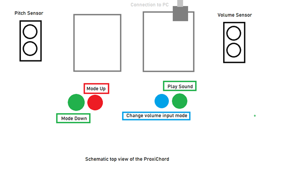
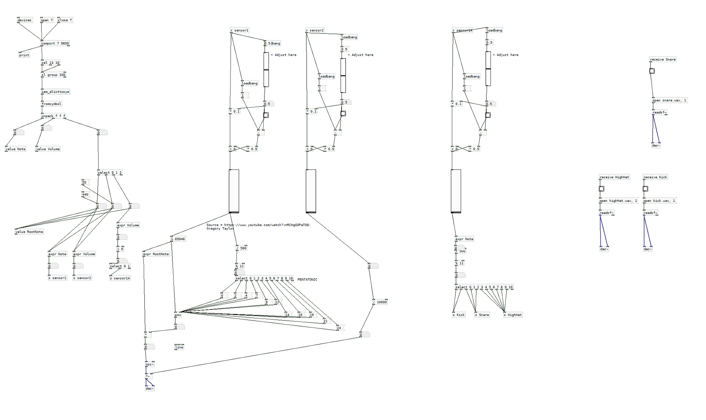

The goal of this project was to explore the world of New Interfaces for Musical Expression (NIMEs) creation. For this, I created the ProxiChord.


On the left you can see a schematic of the instrument. It uses 2 UltraSonic distance sensors and 4 buttons.
- The pitch sensor selects what note you want to play.
- The volume sensor changes the volume of that note.
You can also disable the volume sensor by pressing the "Change Volume Input Mode" button. In that case, the note gets triggered when the "Play Sound" button is pressed.
There are also 3 modes:
- Bass Mode - Plays notes lower in the register.
- Lead Mode - Plays notes higher in the register.
- Sample Mode - Plays drum samples depending on what note you select.
Arduino was used to connect the sensors to the computer. To play sound according to the data, I used a program called Pure Data.
Both Arduino and Pure Data were pretty new to me, so this was something I learned a lot from.
